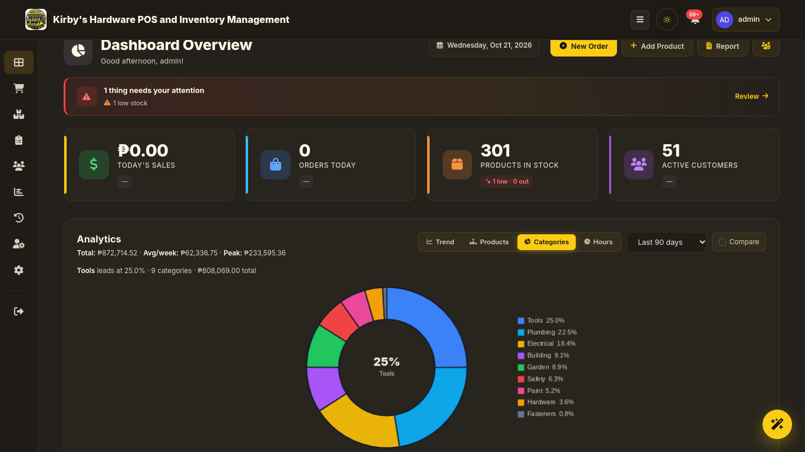
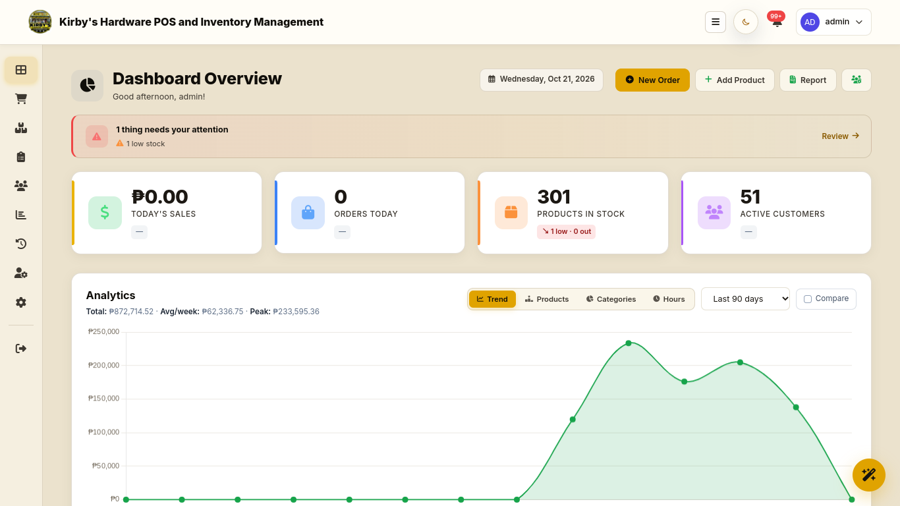

- Manual ProcessesHandwritten ledgers and mental arithmetic lead to data loss and human error.
- Inventory DriftWithout real-time tracking or low-stock alerts, restocking is inefficient.
- Variant ComplexityProducts with multiple sizes, weights, and brands are difficult to track manually.
- Business Blind SpotsNo customer tracking, sales trends, or forecasting capabilities.
- Technology BarriersCommercial POS systems are too expensive and depend on stable internet.
Kirby's Hardware POS and Inventory Management System
A Browser-Based, Offline-Capable, AI-Assisted Platform for Small Retail Enterprises
BSCS 2-A | COMPUTER SCIENCE
Current Operational Challenges
System Functionality
🛒 Point of Sale (POS)
Interactive cart, cash & GCash payments, receipt generation, and variant selection at checkout.
📦 Inventory Management
Product CRUD, matrix variants (Size/Brand), automated low-stock alerts, and CSV exports.
📊 Reports & Analytics
Live KPI dashboards, revenue trends, top-selling products, and financial report exporting.
🛡️ Audit & User Management
Activity trails for staff accountability, secure password resets, and strict admin controls.
Website Design & User Interface
- Responsive LayoutFully functional across desktop, tablet, and mobile browsers.
- Dual Theme SupportDark and Light mode toggle to reduce eye strain in-store.
- Intuitive POS LayoutTwo-column design with searchable catalog and dynamic cart.
- Interactive DashboardsLive KPI cards and Chart.js visualizations.
DARK MODE
kirbys-pos.vercel.app/dashboard

LIGHT MODE
kirbys-pos.vercel.app/dashboard

Features & Innovation
🤖 Kirby AI Assistant
Natural language processing via Gemini/Groq. Answers "What should I restock?" in Tagalog/Taglish.
📈 Statistical Forecasting
Pure-Python engine generating 7-day revenue projections with 95% prediction intervals.
📶 Offline-First Architecture
Firestore caching and local queues allow sales to continue during internet outages.
☁️ Zero-Infrastructure Cost
Serverless deployment (Vercel) ensures zero recurring software costs and no hardware purchase.
Technical Implementation
Presentation Layer (Client)
Vanilla JavaScript (ES2022), HTML5, Tailwind CSS, Service Worker (PWA)
▼
Application Layer (Serverless API)
Python 3.11 (Vercel), NLP Engine, Statistical Forecasting Algorithms
▼
Data Layer (Cloud)
Google Cloud Firestore (NoSQL), Firebase Authentication
- Security: Role-Based Access Control (Admin vs. Cashier) and Firebase ID-Token verification on every request.
- AI Integration: Gemini (Primary) and Groq (Fallback) LLMs, isolated via backend to protect API keys.
Database & Data Management
inventory
Products, Variants, Stock Levels
orders
Receipts, Payments, Line Items
customers
Profiles, Spend, Order Count
audit_logs
User Actions, Timestamps
-
Data Integrity: POS sales use
runTransaction()to guarantee that stock is decremented if and only if an order is successfully recorded. -
Security Rules: All collections require
request.auth != null. Admin-only mutations are strictly enforced at the database layer. - Offline Sync: Firestore persistence queues supported writes in IndexedDB and replays them automatically on reconnect.
System Demonstration
Live Walkthrough
The following functions will now be demonstrated:
POS Checkout
Processing a sale, GCash reference validation, and receipt generation.
Inventory Alerts
Variant matrix tracking and the automated low-stock dashboard notifications.
Kirby AI
Asking the assistant for a sales summary and restock recommendation.
Thank You!
Questions & Answers
This system successfully transforms manual, error-prone hardware retail operations into a fully digital, AI-assisted workflow. It eliminates the need for expensive hardware and ensures business continuity even during internet outages.
BSCS 2-A | COMPUTER SCIENCE